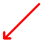
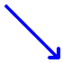

Reductions in the residual sum of squares
The sequential reductions in the residual sum of squares as terms are added to the model are called explained sums of squares. For models with two factors, each of the arrows in the diagram below is associated with an explained sum of squares.
| Neither X nor Z affects Y yijk = µ + εijk |
||||
|  |  | |||
| Only X affects Y yijk = µ + βi + εijk |
Only Z affects Y yijk = µ + γj + εijk |
|||
| Both X and Z affect Y yijk = µ + βi + γj + εijk |
||||
There are two ways in which X can be added — either on its own or after Z has been added to the model. We should therefore distinguish between:
We should similarly distinguish between the sum of squares explained by Z and that explained by Z after X has been added to the model.
Orthogonal designs
However if there are the same number of replicates for each treatment,
The explained sum of squares for X does not depend on whether Z is already in the model.
The explained sums of squares corresponding to the two red arrows are therefore equal, as are those correponding to the blue arrows. If there are equal replicates of all treatments, the two factors are said to be orthogonal. Since there are fewer distinct sums of squares,
Analysis of data from orthogonal designs is simpler, so researchers often design experiments with equal replicates for each treatment.
Alternative interpretation of explained sums of squares
Each explained sum of squares is the difference between the residual sums of squares for two models (with and without the factor).
It is also equal to the sum of squared differences between the fitted values from the two models.
The explained sum of squares describes how much the fitted values change when a factor is added.
Strength of asphaltic concrete
The diagram below again shows the concrete strength data from the previous page.
The arrows on the right represent the two different orders of adding the two factors to the model. When any arrow is clicked, the red lines on the 3-dimensional scatterplot show the changes in the fitted values that result from adding one factor. The coloured grid alternates between the least squares fits of the two models.
The explained sum of squares shown on the bottom right can be interpreted as either:
Click other arrows on the top right to display other explained sums of squares. Since the design is balanced, observe that:
The explained sum of squares for X does not depend on whether Z is already in the model.